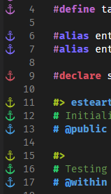
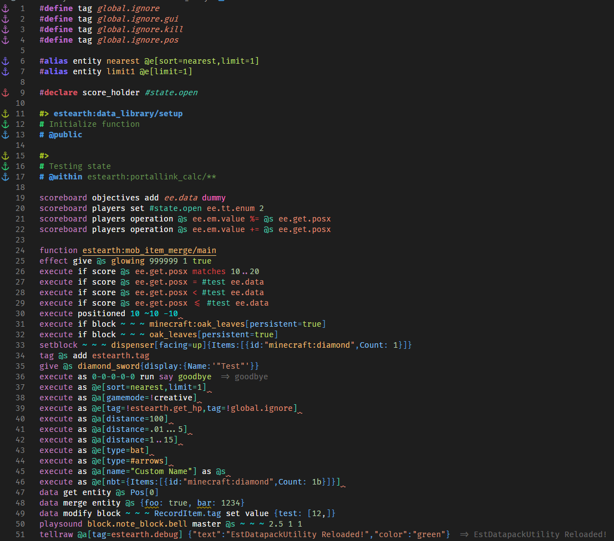

Tooling
This tooling is recommended by me for its datapacking convenience.
Programing
1.Install VS Code or VS Code Insider or VS Codium * I use Insider
2.Extensions
- Data-pack Helper Plus various helper functionality to navigate through datapack.
Rough preview

- language-mcfunction This extension provides a syntax highlighting more color feedback.
- tellraw preview This extension provides text preview for commands that display a message to the player.

- Comment Anchors Highlight comment and color mark
#function of theData-pack Helper Plus.

- Material Icon Theme Change icon for pretty files. This (depends on your preference.)
Setting
If you datapacking and want the code to look like this or customize it as you like. Can be set as follows.

0.Color Theme
Color Theme -> Select "Dark+ (default dark)"
1.Font
- Font Fira Code (Depending on your preference, I use this font, partly because of font ligatures
<= ->as in the picture and@is cool.) - After font download and installed, set font by going to
Setting -> Text Editor -> Font -> Font Family put Fira Code - Font Ligatures (change symbol
<=->) ->Edit in settings.json->"editor.fontLigatures": true
2.Syntax Highlighting Color
- From the previous verse, do not close the window settings.json
- You can copy and insert it (Where
,will continue from the backEditor.fontLigatures ": true) - Want to customize more here
,
"editor.semanticTokenColorCustomizations": {
"enabled": true,
"rules": {
"literal": "#ffffff",
"*.firstArgument": "#c986c4",
"*.declaration": {
"fontStyle": "italic",
},
"identity": "#f1bf74",
"operator": "#da4545",
"boolean": "#bcdf6c",
"property": "#81c0fa",
"string": "#bcdf6c",
"*.inString": {
"fontStyle": ""
},
"type": "#ff6ec3",
"variable": "#e19178",
"vector": "#00ffffde",
}
},
"workbench.colorCustomizations": {
"statusBar.background": "#16825d",
"statusBarItem.remoteBackground": "#3ea8ff"
}
3.Highlighting Commment (You can add after } in verse 2)
,
"commentAnchors.tags.list": [
{
"tag": "ANCHOR",
"iconColor": "default",
"highlightColor": "#A8C023",
"scope": "file",
"enabled": false
},
{
"tag": "TODO",
"iconColor": "blue",
"highlightColor": "#3ea8ff",
"scope": "file",
"enabled": false
},
{
"tag": "FIXME",
"iconColor": "red",
"highlightColor": "#F44336",
"scope": "file",
"enabled": false
},
{
"tag": "STUB",
"iconColor": "purple",
"highlightColor": "#BA68C8",
"scope": "file",
"enabled": false
},
{
"tag": "NOTE",
"iconColor": "orange",
"highlightColor": "#FFB300",
"scope": "file",
"enabled": false
},
{
"tag": "REVIEW",
"iconColor": "green",
"highlightColor": "#64DD17",
"scope": "file",
"enabled": false
},
{
"tag": "SECTION",
"iconColor": "blurple",
"highlightColor": "#896afc",
"scope": "file",
"behavior": "region",
"enabled": false
},
{
"tag": "LINK",
"iconColor": "#2ecc71",
"highlightColor": "#2ecc71",
"scope": "file",
"behavior": "link",
"enabled": false
},
{
"tag": "define",
"highlightColor": "#BA68C8",
"scope": "file",
"isItalic": false
},
{
"tag": "alias",
"highlightColor": "#7c6afb",
"scope": "file",
"isItalic": false,
},
{
"tag": "declare",
"highlightColor": "#d55462",
"scope": "file",
"isItalic": false,
},
{
"tag": "#>",
"highlightColor": "#A8C023",
"scope": "file",
"isItalic": false
},
{
"tag": "# @",
"highlightColor": "#469fe3",
"scope": "file",
"isItalic": false
},
{
"tag": "# ",
"highlightColor": "#2ecc71",
"scope": "file",
"isItalic": false
}
],
"commentAnchors.tags.matchCase": false,
"commentAnchors.tags.separators": [
" - ",
": ",
""
]
Note
The reason for setting such as ANCHOR, TODO, SECTION to false is because it is the default of the extension that produces the same word highlight.